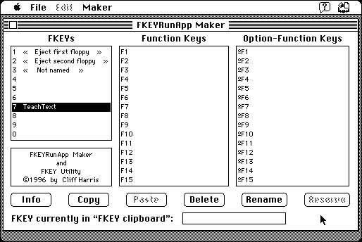

Download
FKEYRunApp.zip (33K) FKEYRunApp Maker 1.01 repackaged into a zipped hfs disk image and checksum file. The disk image can be mounted with Mini vMac.
FKEYRunApp.sit.hqx (41K) FKEYRunApp Maker 1.01 in the original format.
copyright: Cliff Harris
mod date: Dec 25, 1998
license: Freeware
from url :
Freeware Written by Cliff Harris
Allows “you to create an FKEY that causes an application to start executing”. It is also a utility to view installed FKEYs, install them from a file, and renumber, rename, and uninstall them. There is also a feature to “create an FKEY that will open a document with an application”, but it doesn't work on the Mac Plus, and tends to crash the current application. Requires System 7.

If you find these downloads useful, please consider helping the Gryphel Project, which hosts them.
Here are the md5 checksums for the downloads, signed with Gryphel Key 5:
--------- GRY SIGNED TEXT --------- c702a2687e0b541b4191f3add3695f78 FKEYRunApp.zip 7f65648e1b11c23665e67b2ee80360d0 FKEYRunApp.sit.hqx ------- BEGIN GRY SIGNATURE ------- Gry/4Xa8CFcUzxdN/MEU9Md3d11F6nL0A1tmX58zJ5G2MvBodakLFYfHTuRruL0n abBGiXQg0oE5Ro+mlgXndBMg9bXU3hnz+MPGQhpVa7TWLaJvYdrXtVAnBybdegIR JDfl10h6elXSeoN7ikFrEEiI4xIcnpHepdjVhHcwP/+aqP3kvEIF4icvRPe3yIHd -------- END GRY SIGNATURE --------